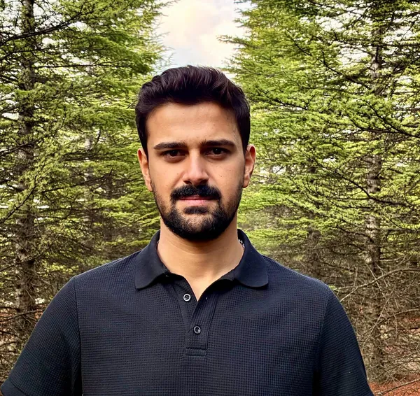

FPGA Tasarım · Gömülü Sistemler · Python Geliştirme · Borsa Analiz Araçları

Genç yaşlardan itibaren farklı sektörlerde deneyim kazanarak çok yönlü bir bakış açısı geliştirmiş, sorumluluk almaktan çekinmeyen ve proaktif yaklaşımı benimsemiş bir profesyonelim. Güçlü liderlik özelliklerim ve ekip çalışmasına yatkınlığım sayesinde projelerde sonuç odaklı hareket eder, her görevde sürekli gelişimi ve yüksek kaliteyi hedeflerim.
Keskin gözlem yeteneğim ve analitik düşünme becerimle, karmaşık problemlere yenilikçi çözümler üretmekten heyecan duyarım. Mühendislik disiplinimin yanı sıra finans, ekonomi ve girişimcilik alanlarına duyduğum derin ilgiyle, bu alanlardaki bilgi birikimimi sürekli genişleterek disiplinler arası bir yetkinlik sunmayı amaçlıyorum.